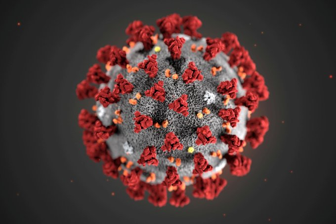
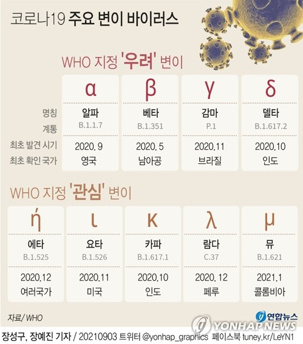

코로나 19 알기
 
코로나 바이러스의 개요
코로나 바이러스의 분류
코로나 바이러스의 형태
코로나 바이러스의 감염 및 치료 정보
1.개요
버튼을 클릭하면 내용이 출력됩니다.
개요보기
2.분류
버튼을 클릭하면 내용이 출력됩니다.
분류보기
3.형태
버튼을 클릭하면 내용이 출력됩니다.
형태보기
4.감염 및 치료 정보
버튼을 클릭하면 내용이 출력됩니다.
감염및치료정보보기